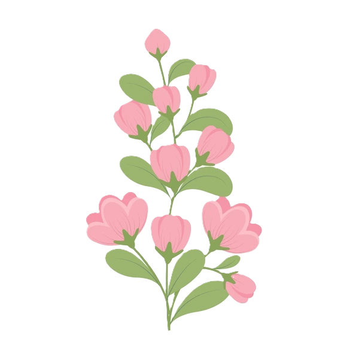
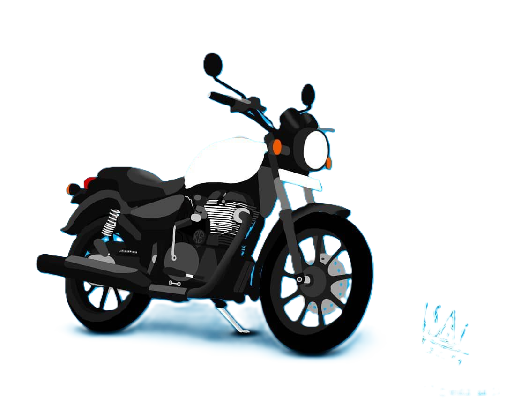
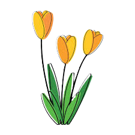
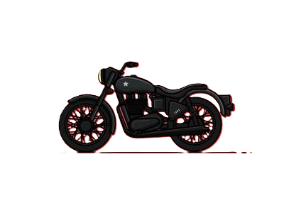
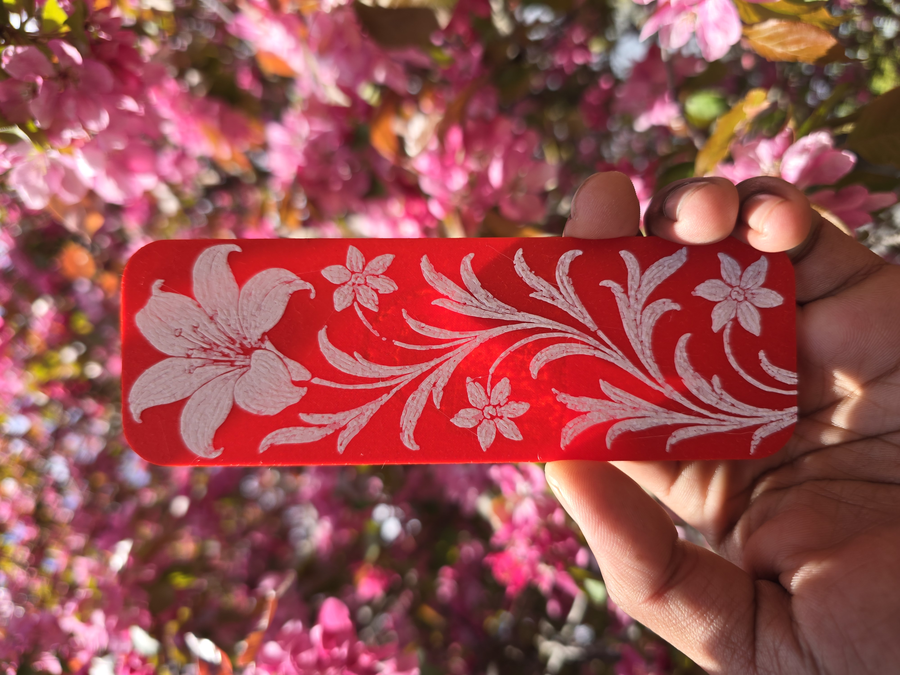
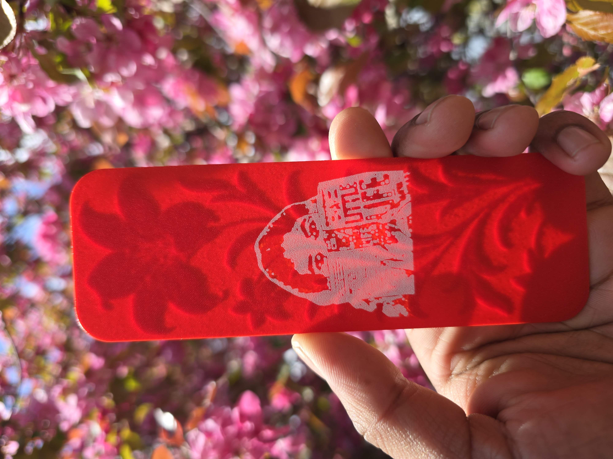
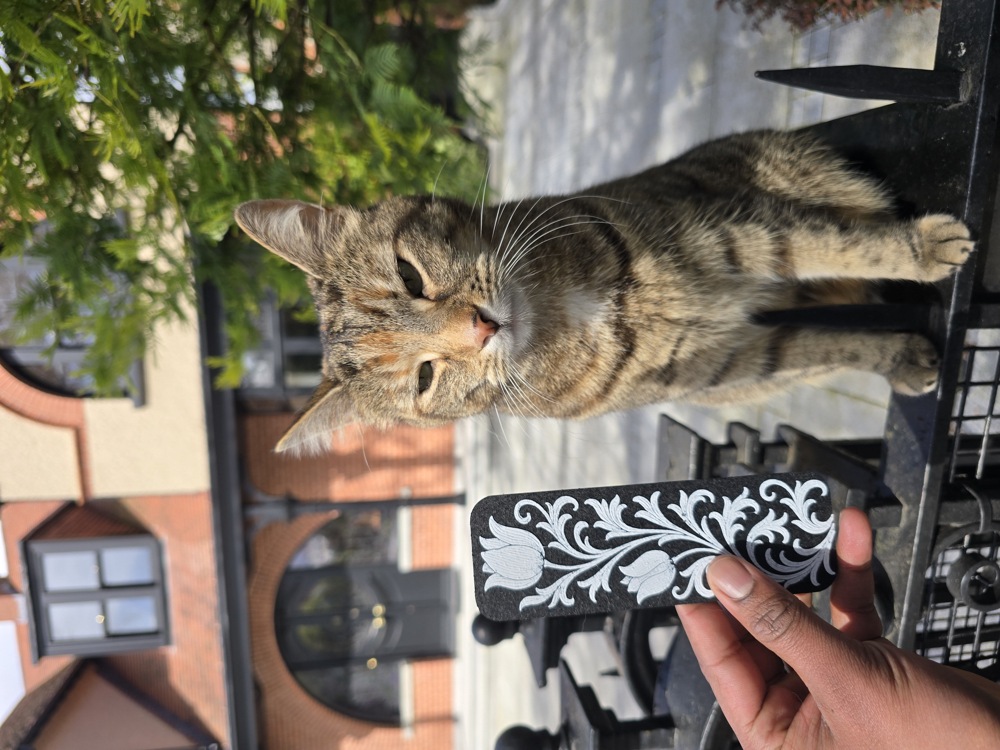
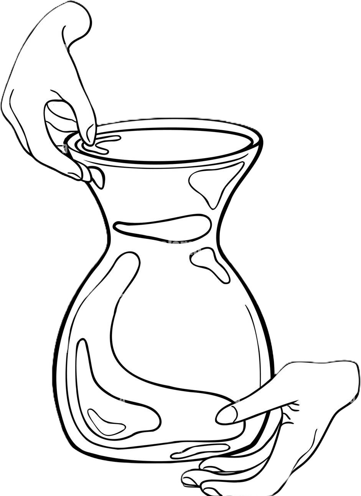

Chapter One
❦
HappyBirthday!!
😍
❦
From 8465 KM's away

✿
✿
A Little Gift





with love
← swipe →

The End
❦
~ Fin ~
Thank you for being you.
— with love
❦
A Little Story
HappyBirthday
For You
tap to open